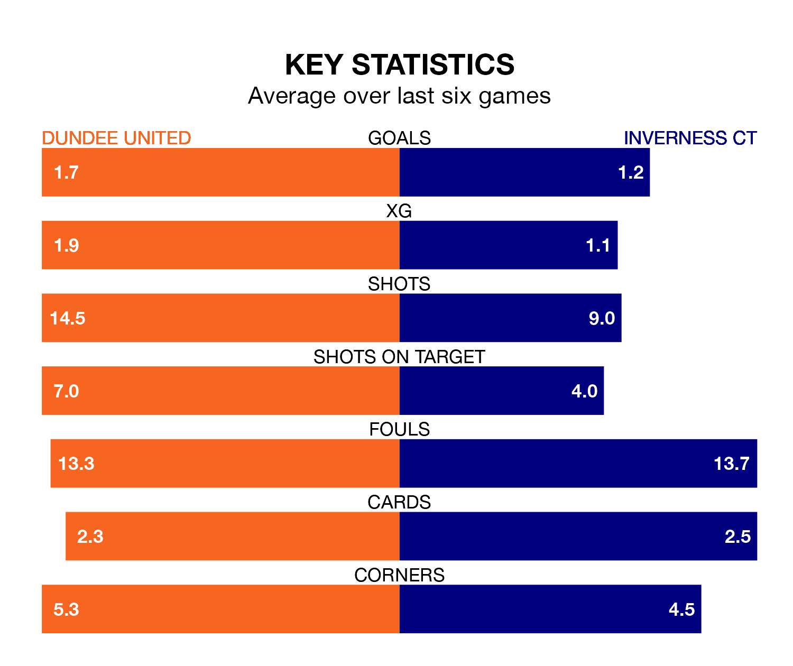

Dundee United host Inverness CT in Saturday's match at Tannadice Park looking to bounce back from defeat last time out in the Championship.
The Terrors, who sit top of the league after 29 games, fell to a 3-1 away defeat to Dunfermline Athletic on March 15.
They face an Inverness CT side who also lost their last match, a 2-1 defeat to Ayr United, and who sit ninth in the table.
With 56 goals in 29 games so far this season, Dundee are the league's highest scorers with 1.9 goals per game. And they are conceding fewer than average, letting in 20 goals at a rate of 0.7 per game.
Inverness CT, meanwhile, are below average scorers, with 1.1 goals per game, compared to a league average of 1.4. They have conceded 1.2 goals per game.
With Jack Walton between the sticks, United can rely on one of the league's safest pair of hands. He has kept 15 clean sheets in his 29 appearances this season, and no 'keeper has prevented the opposition scoring more often in the Championship.
In ICT's net, Mark Ridgers has six clean sheets in 29 games. He has conceded a goal every 82 minutes, 70% more often than the 137 minutes between goals for Walton.
In the last 10 years, Dundee and Inverness CT have played each other on 27 occasions. Dundee won 12 of them, Inverness CT six, and they drew nine times.
On average, the Terrors scored 1.3 goals and ICT 1.0 in those matches.
Their last meeting was on January 12, when Dundee won 1-0 away.
The Terrors are in mixed form in the Championship, with three wins and a draw from their last six games.
With a win and four draws over that period, the away team's form is worse – they have taken seven points from 18, compared to the hosts' 10.
Saturday's match will be refereed by Chris Graham, who has taken charge of six Championship games so far this season, issuing no red cards and booking 22 players. He has awarded two penalties.
The last Dundee game Graham refereed was a 2-1 away win against Dunfermline Athletic on November 10. His last Inverness CT match was their 1-0 loss away at Raith Rovers on September 16.
Updated: 10:19 (UTC), 22/03/24